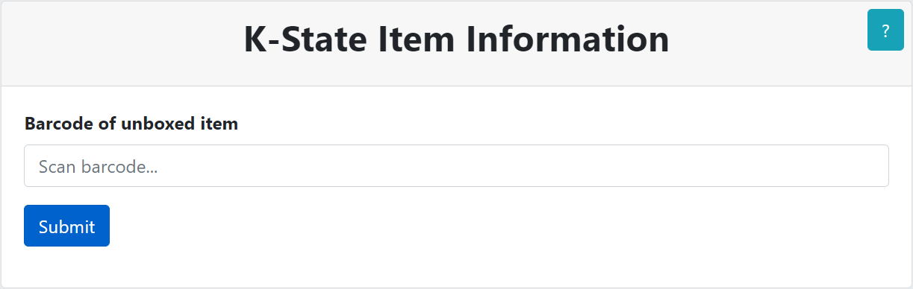

Esta aplicaci243n facilita el flujo de trabajo de desempacar al proporcionarle informaci243n importante. Le proporciona el T205tulo f205sico, N250mero de clasificaci243n, Descripci243n, C243digo de barras, Tipo de proceso, Nota de Procesamiento y su Destino final. La aplicaci243n est225 codificada por colores para proporcionar una respuesta visual estimulada, as205 que revise la tabla de c243digos de color a continuaci243n. Despu233s de escanear su primer c243digo de barras, podr225 escanear su pr243ximo c243digo de barras desde la p225gina de resultados. Si tiene alguna pregunta, no dude en preguntar al personal de la biblioteca.
El primer formulario le pide que escanee el c243digo de barras. Estos c243digos de barras se pueden escanear con el esc225ner de c243digo de barras o ingresandolos. Cuando haya ubicado el c243digo de barras en la pieza f205sica, ingrese dichos c243digos de forma en el formulario:

Si el c243digo de barras no existen dentro del sistema, recibir225 un error. Verifique la pieza f205sica para otros c243digos de barras y si todos devuelven el siguiente error, coloque el art205culo f205sico en el Estante de problema:
El siguiente formulario mostrar225 la informaci243n del art205culo f205sico desempaquetado. El Destino se mostrar225 en la parte superior de la p225gina seguido de T205tulo, N250mero de clasificaci243n, Descripci243n, C243digos de barras, Tipo de proceso, Nota de Procesamiento, y el Destino nuevamente. El color de fondo del formulario est225 relacionado con el destino del art205culo f205sico. Revise la tabla de c243digos de color a continuaci243n. Si la fila Tipo de proceso tiene un color de fondo de rojo coloque el art205culo f205sico en el Estante de problema, ignorando el destino indicado. Si la fila Nota de cumplimiento tiene un color de fondo rojo, coloque el art205culo f205sico en el Estante de problema, ignorando El destino indicado:

Cuando est233 listo, puede escanear los siguientes c243digos de barras utilizando el formulario en la parte inferior de la p225gina:
| Destino | Descripci243n |
|---|---|
 |
Coloque el art205culo en el carrito etiquetadoPara HALE |
 |
a. Coloque el art205culo en el carrito etiquetado ANEXO |
| Coloque el art205culo en el carrito etiquetado Para Remover | |
 |
Lleve el art205culo al estante etiquetado Estante de problema |
| Lleve el art205culo al estante etiquetado Estante de problema | |
| Lleve el art205culo al estante etiquetado Estante de problema |